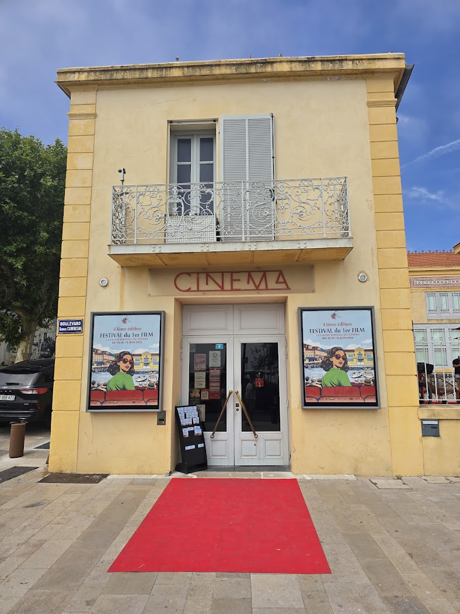

French, Italian and Spanish cinema is where I keep ending up. Films that trust you to sit with something, that let a scene run past the point where a studio would have cut it.
The opposite of a feed: one thing, at length, chosen by someone with taste.

../assets/film-hero.jpgNot a rule, a pattern I noticed afterwards.
The tradition that treats a conversation as enough plot. Also the one where the ending is allowed not to resolve — which turns out to be closer to how things actually go.
Beauty and melancholy in the same frame, without either being an apology for the other. La Grande Bellezza is somewhere in the foundations of this whole site.
Warmer, louder, more willing to be strange. The colour and the appetite that the French shelf occasionally lacks.
Arthouse cinema on the Kop van Zuid, and the default answer to "shall we do something?". A programme curated by people who watch more than I do — which is the entire value of a film house over an algorithm.
Weekend mornings: breakfast from 9:30, then a selected film. About €26,50 for two. The best standing formula the city has, and worth booking ahead for.
Three channels, and they have left a paper trail going back to 2015.
The cinema itself, and the pass that made going to one a habit rather than an occasion. Rotterdam has KINO on the Gouvernestraat too — the city is well served for a place its size.
Arthouse streaming where the rental is credited to your own film house. The lockdown years version of going out, and the newsletter still arrives every Friday.
The broader catalogue for everything the arthouse channels do not carry.
Pulled from rental receipts rather than memory — which is why the list is honest rather than flattering.
Almodóvar. Colour, grief and mothers — the Spanish shelf at its most controlled.
A Lombardy summer and a Sicilian childhood. Two very different films that both trust the landscape to carry half the story.
Deux came via Picl and LantarenVenster's own share — arthouse rented from home while the cinema was shut, which is exactly what that platform was built for.
Twenty years of confirmations still to be swept properly — the same job that fills the Stage section.
The other screen, and a more revealing one. Almodóvar and Dutch reality television about people starting over are, it turns out, the same appetite: a curiosity about how people actually live.
The original: Dutch families emigrate, buy a ruin, start over. Every episode is the same brave, slightly doomed leap — and I watch all of them.
Het Spaanse Dorp, Hollandse Makelaars aan de Costa, Let's get Spanish. Same dream, sunnier setting. The literal version of the thread.
Retirees in campers, the campsite as a small society. Slower, kinder, and about the same thing: being somewhere else, together.
Spoorloos (reunions across decades), Droomhuis gezocht, and Beau's travelling talk shows — Casa, Isola, Lago di Beau. People, at length.
Estates and gardens. The low-stakes end of the shelf — restoration as television, which is oddly close to what I do all day.
Heel Holland Bakt, Beste Zangers, Maestro, Zomergasten, 3 op Reis, First Dates. Not prestige television — the comfortable, well-made Dutch kind.
Source: my own series folders in the vault (NPO + RTL, by genre) — the site is the shop window, the vault is the record.